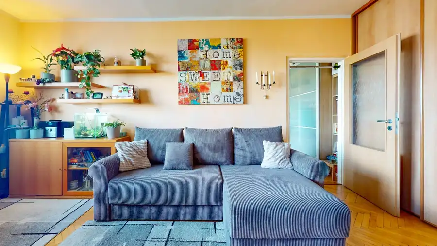
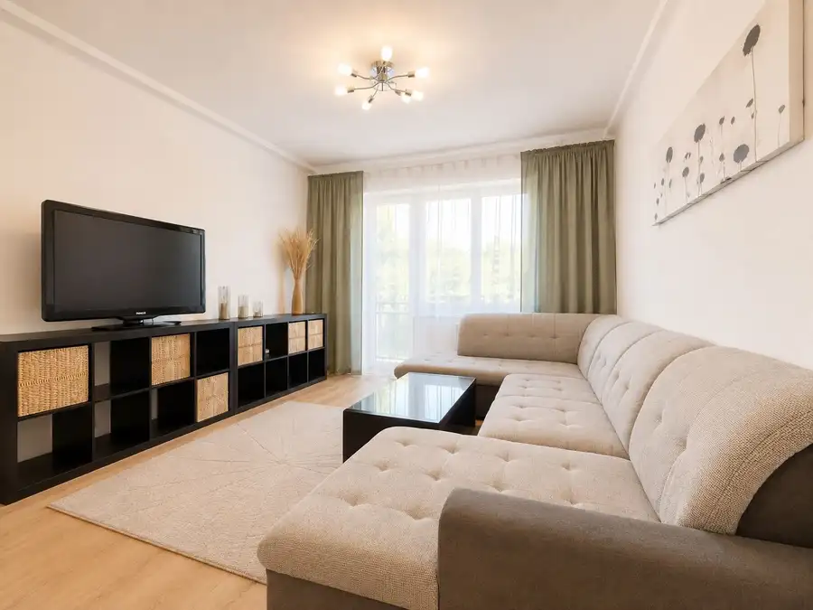

Priestranný 2i byt v obklopení zelene len pár krokov od OC Nivy | 53m²
Ružinov, Bratislava
- Dispozícia2-izbový
- Plocha51.55 m²
- Stavčiastočne prerobený
- Vlastníctvoosobné
- Energetická triedaB
O nehnuteľnosti
Ponúkame ti exkluzívne na predaj 2-izbový byt v projekte 500 bytov o výmere 51,55 m² s murovanou pivnicou o výmere 1,58 m², ktorý sa nachádza na Budovateľskej ulici v bezprostrednom dotyku s Nivami. Byt je situovaný na vyvýšenom prízemí tehlového bytového domu bez výťahu z roku 1965.
PREJDI SA BYTOM:
https://my.matterport.com/show/?m=yn4sVJYZTk6
LOKALITA:
Bývanie ti ponúka výbornú kombináciu dostupnosti a pokojného prostredia. Nivy máš prakticky za rohom, no samotný byt sa nachádza v lokalite s množstvom zelene, detskými či športovými ihriskami.
Len 240 m od domu sa nachádza OC Nivy spolu s autobusovou stanicou. Nájdeš tu obchody, reštaurácie, kaviarne, služby, fitko, banky či lekáreň. Pred OC Nivy premáva aj autobusová linka 88 smerom do Petržalky.
Ďalšia zastávka MHD je vzdialená približne 350 m a premáva z nej linka 40 smerom na Hlavnú stanicu cez Račianske mýto. Tretia zastávka ponúka spojenie linkou 60 smerom na Bajkalskú a do Trnávky.
Ak máš deti, oceníš ZŠ Kuliškova prakticky hneď pri dome a približne 10 minút pešo vzdialené Gymnázium Jura Hronca.
S parkovaním v okolí bytového domu nie je problém. Tak ako vo väčšine mesta, je riešené formou PAAS s možnosťou registrácie vozidla pri zriadení trvalého pobytu.
DISPOZÍCIA A CHARAKTER BYTU:
Zádverie bytu ponúka skrine s úložným priestorom a malú samostatnú miestnosť, ktorú môžeš využiť ako priestor pre práčku so sušičkou, komoru, šatník alebo jednoducho ako ďalší odkladací priestor.
Chodba ťa ďalej zavedie do priestrannej spálne. Tá ponúka dostatok priestoru na veľkú manželskú posteľ aj priestranné šatníky s dostatkom úložného priestoru.
Z chodby sa ďalej dostaneš do kúpeľne so sprchovým kútom a samostatného WC. Byt následne pokračuje do kuchyne s jedálenskou časťou, ktorá tvorí prirodzené centrum každodenného fungovania. Kuchyňa je vybavená umývačkou riadu, chladničkou s mrazničkou, mikrovlnkou a plynovým sporákom.
Vedľa kuchyne sa nachádza samostatná obývacia izba s gaučom a priestrannou skriňovou zostavou. Výhodou je, že je od kuchyne úplne oddelená a môže slúžiť aj ako samostatná spálňa alebo hosťovská izba.
Obe miestnosti sú orientované na východ, vďaka čomu sú počas dňa príjemne presvetlené. Pred oknami zároveň rastú vzrastlé stromy, ktoré v lete prirodzene tlmia priame slnečné žiarenie, pomáhajú udržať príjemnejšiu teplotu v byte, a zároveň vytvárajú prirodzenú clonu od ulice, čím prinášajú viac súkromia.
Byt prešiel čiastočnou rekonštrukciou, v rámci ktorej boli v kuchyni a kúpeľni vymenené rozvody vody a elektriny.
MESAČNÉ NÁKLADY:
179€ pre jednu osobu
CENA:
255.000€
V prípade záujmu o detailnejšie informácie alebo obhliadku nehnuteľnosti ma neváhaj kontaktovať:
Samuel Petrovský
Inverest s.r.o.
Tel.:
E-mail:
Uvedená cena je konečná, pokiaľ sa zmluvné strany nedohodnú inak, a nenavyšuje sa o odmenu sprostredkovateľa.
V cene je zahrnuté právne poradenstvo, vyhotovenie kúpnych zmlúv, hypotekárne poradenstvo a poplatok za návrh na vklad do katastra.
Parametre
| Celková rozloha | 53.13 m² |
|---|---|
| Úžitková plocha | 51.55 m² |
| Poschodie | zvýšené prízemie |
| Počet poschodí | 4 |
| Vlastníctvo | osobné |
| Stav | čiastočne prerobený |
| Odvoz odpadu | áno |
| Plyn | áno |
| Internet | optika |
| Kúpeľňa | sprchovací kút |
| Vykurovanie | spoločné |
| Balkón | nie |
| Lódžia | nie |
| Terasa | nie |
| Pivnica | áno |
| Garáž | nie |
| Výťah | nie |
| Parkovanie | verejné |
| Postavené z | tehla |
| Zariadenie | zariadený |
| Zateplený objekt | nie |
| Klimatizácia | nie |
| Káblová televízia | áno |
| Energetický certifikát | B |
| Predzáhradka | nie |
| Bezbariérový prístup | nie |
| Okná | plastové |
| Orientácia | juhovýchodná |
| Dátum zverejnenia | 27. 9. 2026 |
Kde to je
Mohlo by Vás zaujímať
 Byt6
Cena dohodouPriestranný 3-izbový byt s balkónom a lodžiou | 90 m² | Ružinov I
Ružinov, Bratislava
3-izbový70 m²3. podlažie
Hľadáte priestranné a kompletne zariadené bývanie v obľúbenej časti Ružinova, kde si stačí priniesť osobné veci a môžete okamžite bývať? Ponúkame Vám…
Byt6
Cena dohodouPriestranný 3-izbový byt s balkónom a lodžiou | 90 m² | Ružinov I
Ružinov, Bratislava
3-izbový70 m²3. podlažie
Hľadáte priestranné a kompletne zariadené bývanie v obľúbenej časti Ružinova, kde si stačí priniesť osobné veci a môžete okamžite bývať? Ponúkame Vám…

BytNové10 250 000 €Svetlý 2i byt s drevenou podlahou | Štrkovec | 52 m² | 2 balkóny Ružinov, Bratislava 2-izbový51.71 m²5. podlažie Ponúkame ti exkluzívne na predaj priestranný 2-izbový byt s úžitkovou plochou 51,71 m² a pivničnou kobkou 1.5m² v najvyhľadávanejšej časti Bratislavy…
BytNové6 Cena dohodouPriestranný 3-izbový byt s balkónom a lodžiou | 90 m² | Ružinov I Ružinov, Bratislava 3-izbový70 m²3. podlažie Hľadáte priestranné a kompletne zariadené bývanie v obľúbenej časti Ružinova, kde si stačí priniesť osobné veci a môžete okamžite bývať? Ponúkame Vám…